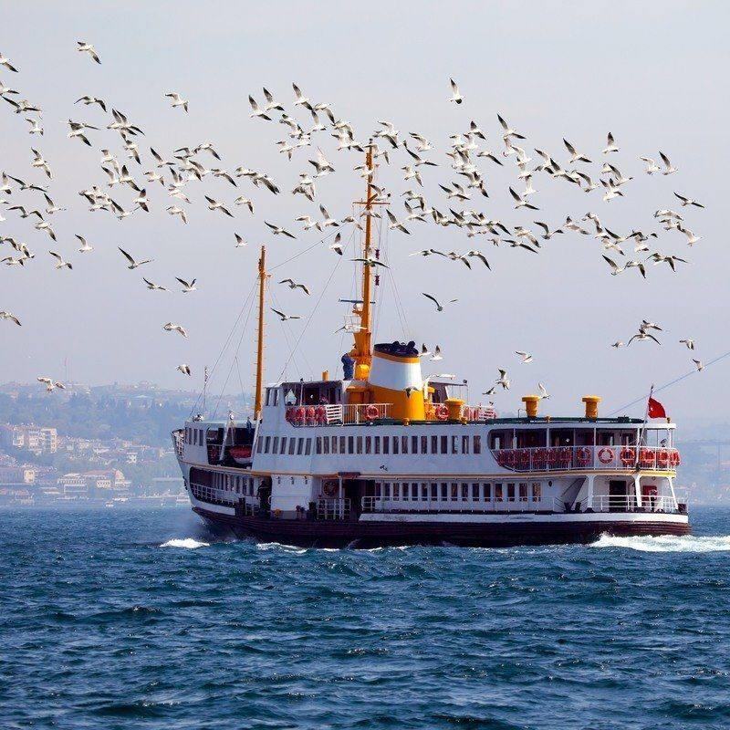

Audio story, 0:31 The last ferry of the night A ferry captain reflects on the quiet crossings that connect a city after dark.  Image: A ferry crosses open water, followed by seagulls. Your browser can’t play audio. Download the file or read the transcript below. Select a line in the transcript to jump to that moment. Transcript Select a timestamp to move to that moment in the story. 0:01The city is settling down, but out on the water, the night is just beginning. 0:08For twenty years, I’ve taken the last ferry across this harbour. Every crossing is a little different. 0:17You notice the small things. A light in a window. Someone waiting on the other shore. 0:24It’s more than getting from one place to another. Sometimes, the journey is the story.